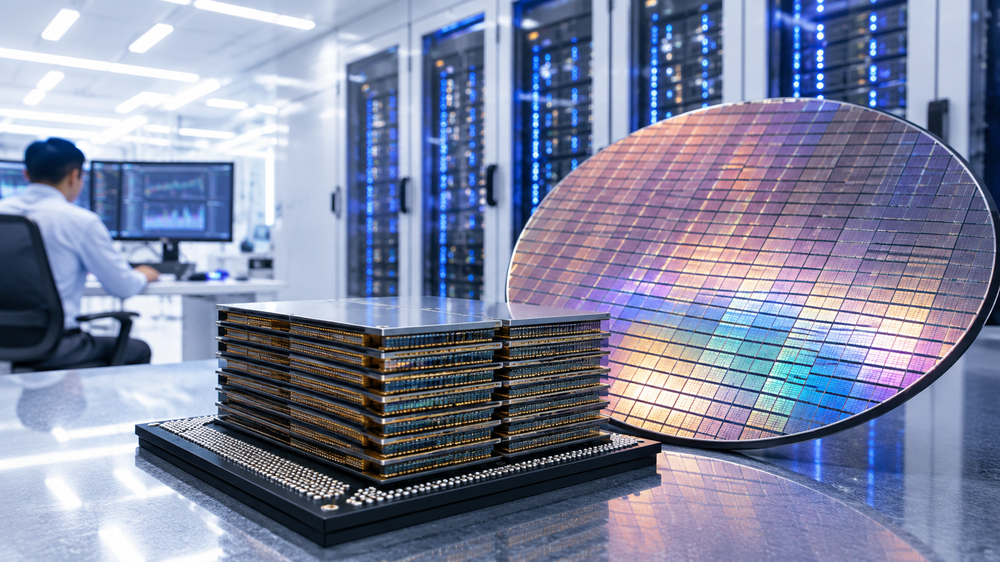
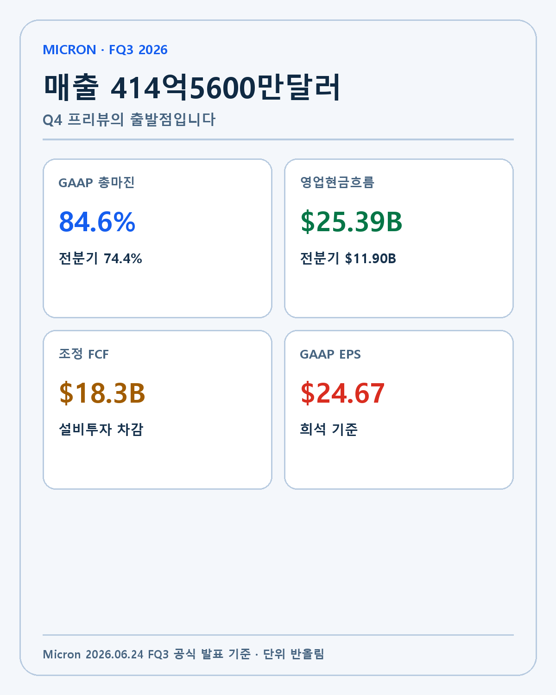
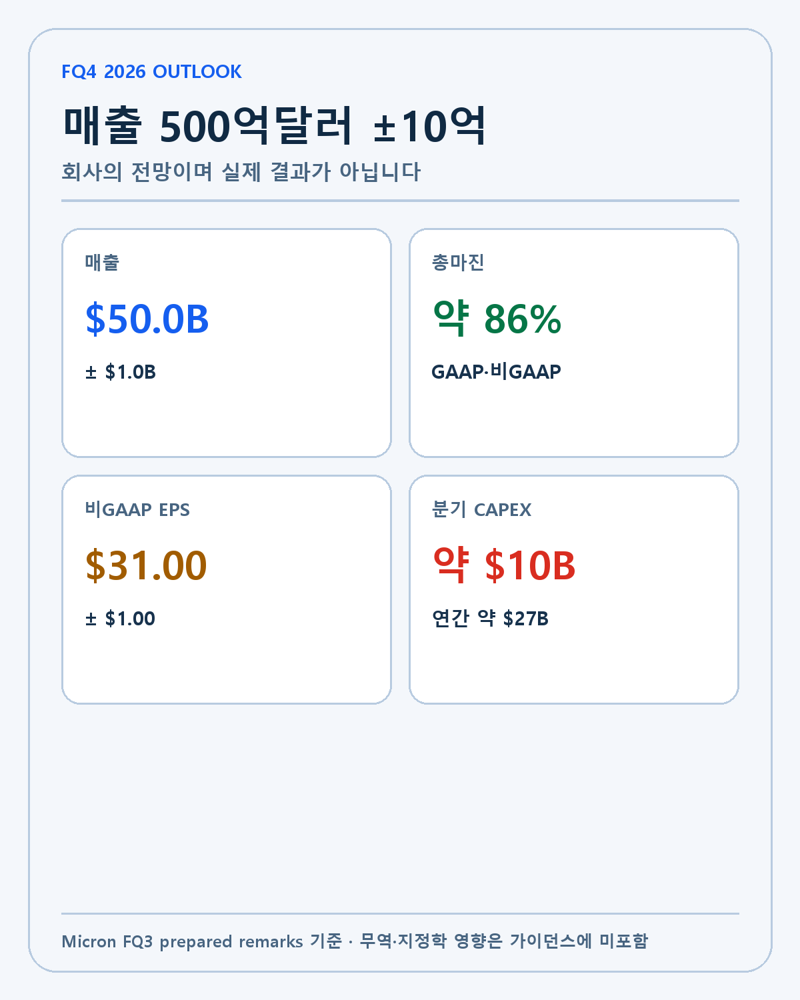
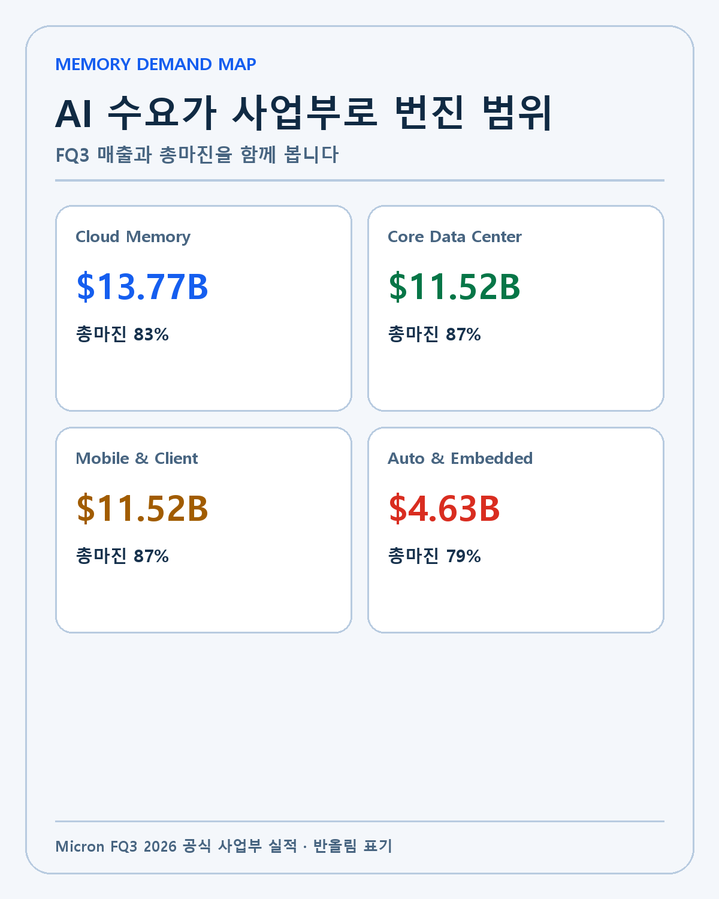
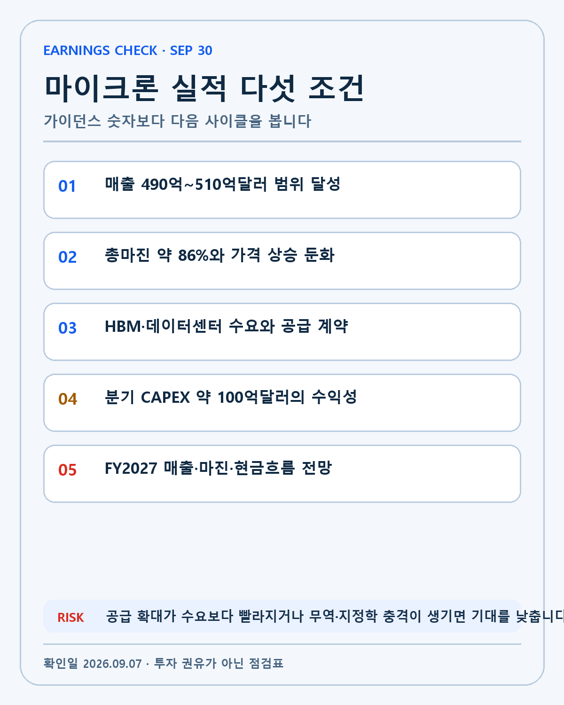

MICRON · DEEP RESEARCH
마이크론 FY2026 4분기 실적 프리뷰: 500억달러 매출 뒤의 AI 메모리 복리 조건
마이크론 FY2026 4분기 매출 500억달러 가이던스, 총마진 86%, HBM 수요와 270억달러 자본지출을 공식 자료로 검증합니다.
마이크론은 2026년 9월 30일 오후 2시30분 미국 산악시간에 FY2026 4분기 실적을 발표합니다. 한국시간은 10월 1일 오전 5시30분입니다. 시장이 확인할 기준은 회사가 3분기 실적과 함께 제시한 매출 500억달러±10억달러, 총마진 약 86%, 비GAAP 희석 EPS 31달러±1달러입니다.
이 숫자들은 마이크론이 과거의 전형적인 메모리 사이클과 다른 국면에 들어섰다는 기대를 키웁니다. AI 데이터센터가 HBM과 고용량 DRAM, 스토리지 수요를 동시에 늘리고 있고 고객은 다년 공급계약을 통해 물량을 확보하려 합니다. 그러나 높은 가격과 마진이 다음 사이클에도 그대로 유지된다는 뜻은 아닙니다. 공급투자, 고객 재고, 가격 상승 속도, 무역과 지정학 위험을 함께 봐야 합니다.
이 보고서는 마이크론 FY2026 3분기 실적자료, 준비 발언, SEC 10-Q, 4분기 발표 일정을 기준으로 작성했습니다.

다섯 줄 결론
첫째, 3분기 매출 414억5600만달러와 GAAP 총마진 84.6%는 AI 메모리 수요가 손익으로 전환됐다는 강한 증거입니다. 둘째, 4분기 매출 500억달러와 총마진 86%는 회사 전망이며 아직 실제 결과가 아닙니다. 셋째, 회사는 4분기 총마진 가정에 가격 상승 속도의 의미 있는 둔화를 반영했습니다. 넷째, 4분기 순설비투자 약 100억달러와 연간 270억달러의 자본지출이 다음 공급과 자유현금흐름을 결정합니다. 다섯째, 무역과 지정학 변화의 잠재적 영향은 가이던스에 포함되지 않았습니다.
마이크론을 대형 기술 복리주로 보려면 최고 실적 한 번보다 사이클 전체의 현금흐름을 봐야 합니다. 수요가 강할 때 벌어들인 현금을 기술과 공급능력에 투자하고, 공급 과잉이 올 때에도 재무구조와 가격 규율을 지킬 수 있어야 합니다.
발표 일정과 검증 방법
마이크론은 8월 26일 공지에서 FY2026 4분기 컨퍼런스콜을 9월 30일 오후 2시30분 산악시간에 연다고 밝혔습니다. 9월 말 산악지역은 일광절약시간인 MDT를 적용합니다. MDT는 UTC-6, 한국은 UTC+9이므로 한국시간으로 15시간을 더해 10월 1일 오전 5시30분입니다.
실적 발표를 세 단계로 나눠 읽겠습니다. 첫 단계는 4분기 실제 매출·총마진·EPS와 회사 가이던스의 차이입니다. 두 번째는 영업현금흐름·자유현금흐름·자본지출로 성장의 질을 확인합니다. 세 번째는 FY2027 전망에서 HBM과 일반 DRAM, NAND, 고객 계약, 공급증가율을 봅니다.
| 구분 | 현재 확인된 기준 | 4분기 발표에서 볼 것 |
|---|---|---|
| 매출 | FQ3 $41.456B | FQ4 $49B–$51B 범위 |
| GAAP 총마진 | FQ3 84.6% | FQ4 약 86% |
| 비GAAP EPS | FQ4 가이드 $31±$1 | 실제 EPS와 다음 분기 전망 |
| 영업현금흐름 | FQ3 $25.39B | 매출 증가가 현금으로 남는지 |
| 순설비투자 | FQ3 $7.1B | FQ4 약 $10B |
3분기 기준선이 보여 주는 변화
3분기 매출은 414억5600만달러였습니다. 전분기 238억6000만달러보다 73.7%, 전년 동기 93억100만달러보다 약 345.7% 늘었습니다. 단순 수요 회복을 넘어 가격과 제품 믹스, HBM을 포함한 데이터센터 수요가 동시에 작용한 결과입니다.
GAAP 총마진은 84.6%로 전분기 74.4%, 전년 동기 37.7%보다 높았습니다. GAAP 영업이익률은 80.4%, GAAP 순이익은 282억4300만달러, 희석 EPS는 24.67달러였습니다. 비용 구조가 매출 증가보다 느리게 늘면서 영업 레버리지가 크게 나타났습니다.

영업활동현금흐름은 253억9000만달러로 전분기 119억달러, 전년 동기 46억1000만달러를 웃돌았습니다. 조정 자유현금흐름은 183억달러였습니다. 순설비투자 71억달러를 집행하고도 큰 현금이 남았다는 점은 이번 사이클의 질을 설명하는 중요한 자료입니다.
분기말 현금·시장성 투자자산·제한현금은 302억달러였습니다. 현금이 많다는 사실만으로 복리가 보장되지는 않습니다. 자본지출, 배당, 부채와 다음 공급능력에 어떻게 배분하는지가 중요합니다. 마이크론 이사회는 주당 0.15달러의 분기 배당도 결정했습니다.
높은 총마진은 강점인 동시에 경계 신호입니다. 메모리 산업에서 높은 마진은 고객 수요와 공급 부족을 반영하지만 경쟁사와 마이크론의 투자 유인을 키웁니다. 수요 증가율보다 공급 증가율이 높아지는 시점에는 가격이 빠르게 정상화될 수 있습니다.
4분기 500억달러 가이던스의 의미
마이크론은 4분기 매출 중간값을 500억달러로 안내했습니다. 범위는 490억–510억달러입니다. 중간값은 3분기보다 약 20.6% 많습니다. GAAP와 비GAAP 총마진은 약 86%, 비GAAP 영업비용은 약 16억5000만달러, 비GAAP EPS는 31달러±1달러입니다.

가이던스가 실제 결과보다 중요한 부분도 있습니다. 현재 주가는 높은 4분기 실적을 어느 정도 기대하고 있을 수 있습니다. 실제 숫자가 가이던스를 달성해도 FY2027 전망에서 성장률과 총마진이 낮아지면 시장은 미래를 먼저 반영할 수 있습니다. 반대로 4분기 실적이 중간값 부근이어도 HBM 물량과 고객 계약, 다음 분기 현금흐름 전망이 강하면 장기 논리는 유지될 수 있습니다.
회사는 4분기 총마진 전망에 메모리 가격 상승 속도의 의미 있는 둔화를 반영했다고 설명했습니다. 가격이 하락한다는 말과 같은 뜻은 아닙니다. 높은 가격이 더 느리게 오를 수 있다는 의미입니다. 실적 발표에서는 HBM과 일반 DRAM, NAND의 가격과 출하량이 각각 어떻게 변하는지 확인해야 합니다.
가이던스에는 무역이나 지정학 변화의 잠재적 영향이 포함되지 않았습니다. 수출 규제, 관세, 중국 사업, 고객의 지역별 주문과 공급망 정책이 바뀌면 실제 실적과 FY2027 전망이 달라질 수 있습니다. 회사 전망과 제외 조건을 같은 문단에서 읽어야 합니다.
사업부별 매출이 보여 주는 AI 수요의 폭
Cloud Memory 사업부의 3분기 매출은 137억6900만달러, 총마진은 83%, 영업이익률은 78%였습니다. Core Data Center 사업부는 매출 115억2400만달러, 총마진 87%, 영업이익률 83%였습니다.
Mobile and Client 사업부는 매출 115억2100만달러, 총마진 87%, 영업이익률 86%를 기록했습니다. Automotive and Embedded 사업부 매출은 46억3400만달러, 총마진 79%, 영업이익률 75%였습니다.

AI 메모리 수요를 HBM만으로 보면 산업 연결을 놓칩니다. AI 서버에는 HBM 외에도 일반 DRAM과 SSD가 필요합니다. 데이터센터 운영이 커지면 저장장치와 네트워크 계층의 수요도 늘 수 있습니다. 온디바이스 AI는 스마트폰과 PC의 메모리 탑재량을 높일 가능성이 있습니다.
네 사업부가 모두 높은 마진을 보였다는 점은 수요가 특정 제품 한 곳에만 몰리지 않았다는 근거입니다. 그러나 사업부 구분이 제품별 가격과 물량을 전부 공개하는 것은 아닙니다. HBM의 직접 매출, NAND의 가격, 고객별 재고는 추가 설명이 필요합니다.
고객이 장기 물량을 확보하려고 주문을 앞당기면 단기 실적이 실제 최종 수요보다 강해질 수도 있습니다. 마이크론은 다년 전략적 고객 계약이 실적의 지속성과 예측 가능성을 높일 것으로 기대합니다. 계약이 공급 규율을 강화하는지, 선구매와 고객 재고를 늘리는지는 다음 출하와 현금흐름에서 검증해야 합니다.
HBM과 공급 계약이 해자가 되는 조건
HBM은 여러 DRAM 다이를 수직으로 쌓고 높은 대역폭으로 AI 가속기와 연결합니다. 기술 경쟁력은 단순 생산량뿐 아니라 수율, 적층, 열 관리, 전력효율, 고객 인증과 패키징에서 나옵니다. 고객의 차세대 가속기 일정에 맞춰 제품을 양산해야 매출이 이어집니다.
장기 고객 계약은 수요 가시성을 높입니다. 메모리 가격이 급등하거나 부족해도 고객은 필요한 물량을 확보하고, 공급자는 투자 회수에 대한 확신을 높일 수 있습니다. 반대로 계약 가격과 물량이 시장 변화에 어떻게 조정되는지 공개되지 않으면 수익의 하방을 완전히 알 수 없습니다.
마이크론의 해자는 기술, 제조 학습, 고객 인증, 대규모 자본투자와 공급계약의 조합입니다. 특정 분기의 가격 상승만으로 해자를 판단하지 않습니다. 경쟁사의 HBM 수율과 공급 확대, 고객의 자체 최적화, 가속기 아키텍처 변화가 상대 경쟁력을 바꿀 수 있습니다.
270억달러 자본지출과 자유현금흐름
회사는 4분기 순설비투자를 약 100억달러로 예상했습니다. FY2026 연간 자본지출은 약 270억달러입니다. 이는 정부 인센티브를 차감한 순액 기준입니다. FY2027에는 연구개발 확대 등으로 영업비용이 약 10억달러 증가할 것으로 전망했습니다.
첨단 공정과 HBM 생산능력을 늘리려면 큰 자본이 필요합니다. 공급이 부족한 상태에서 수요가 장기간 유지되면 투자는 매출과 현금흐름을 키웁니다. 그러나 메모리 산업의 과거 사이클은 공급이 늦게 늘어난 뒤 수요 둔화와 겹칠 때 가격 하락이 커질 수 있음을 보여 줍니다.
자유현금흐름을 볼 때 분기 최고값을 연간화하지 않겠습니다. 매출과 총마진, 운전자본, 자본지출이 함께 변합니다. 4분기와 FY2027 전망에서 영업현금흐름 증가가 설비투자 증가를 얼마나 웃도는지 확인하겠습니다.
투자수익률도 중요합니다. 새 팹과 장비가 HBM과 첨단 DRAM의 높은 부가가치로 이어지면 자본지출은 해자를 넓힙니다. 일반 메모리 공급만 늘리고 가격 규율을 무너뜨리면 같은 금액이 사이클 위험을 키웁니다.
강세·기준·약세 시나리오
강세 시나리오는 4분기 매출이 510억달러 부근, 총마진이 86% 이상으로 나오고 FY2027에도 HBM과 데이터센터 수요가 공급을 앞서는 경우입니다. 전략적 고객 계약이 실제 출하와 현금회수로 이어지고, 연간 270억달러 자본지출 뒤에도 큰 자유현금흐름이 남으면 대형 기술 복리주 논리가 강화됩니다.
기준 시나리오는 4분기 실적이 가이던스 범위에 들어오지만 가격 상승 속도가 낮아지고 FY2027 총마진이 정상화되는 경우입니다. 최고 마진을 영구 가정하지 않고 매출 성장, 현금흐름, 주당가치와 자본배분을 봅니다. 좋은 기업과 좋은 매수가격을 분리하는 구간입니다.
약세 시나리오는 고객 재고 증가와 공급 확대가 수요 둔화와 겹치는 경우입니다. HBM 수요는 유지돼도 일반 DRAM이나 NAND 가격이 약해질 수 있습니다. 무역·지정학 충격이 특정 고객과 지역 매출을 바꾸거나 자본지출 이후 자유현금흐름이 급격히 줄어도 투자 논리를 낮춥니다.
투자 가설의 무효화 조건은 한 번의 주가 하락이 아닙니다. HBM과 첨단 DRAM의 기술 경쟁력 약화, 주요 고객 인증·물량 상실, 경영진의 공급 규율 변화, 공급이 수요보다 빠르게 늘어나는 구조, 사이클 전체의 주당 현금흐름 악화를 봅니다.
내 포트폴리오에서 마이크론의 역할
내 투자 순서는 기술, 해자, 창업자와 경영진, 성장률, 현금흐름입니다. 마이크론은 AI 핵심 인프라를 공급하면서 이미 큰 현금을 만드는 대형 기술 복리주 축입니다. 엔비디아의 GPU가 계산을 담당한다면 메모리는 모델과 데이터를 빠르게 공급하는 병목입니다.
마이크론을 엔비디아와 같은 방식으로 평가하지는 않습니다. 메모리는 표준화된 제품과 공급 사이클의 영향을 더 크게 받습니다. 기술 경쟁력이 높아도 업황이 꺾이면 가격과 총마진이 빠르게 움직일 수 있습니다. 그래서 성장률과 현금흐름 다음에 공급 규율을 별도로 확인합니다.
월급날 정기 투자를 이어가되 실적 전후 가격을 무시하지 않습니다. 500억달러 매출이 확인돼도 시장이 FY2027의 최고 시나리오까지 반영했다면 기대수익률은 낮을 수 있습니다. 반대로 가격이 흔들려도 기술·고객 계약·현금흐름이 유지되면 사업 논리와 가격 조정을 분리합니다.
발표 당일 확인할 다섯 가지

- 실제 매출이 490억–510억달러의 회사 가이던스에 들어오는지 확인합니다.
- 총마진 약 86%와 메모리 가격 상승 속도 둔화가 어떤 제품에서 나타났는지 봅니다.
- HBM·클라우드·핵심 데이터센터 수요와 전략적 고객 계약의 물량·기간 설명을 기록합니다.
- 순설비투자 약 100억달러 뒤의 영업현금흐름과 자유현금흐름을 계산합니다.
- FY2027 매출·총마진·자본지출·공급 증가 전망이 다음 사이클을 어떻게 바꾸는지 봅니다.
발표 직후에는 실적 자료와 컨퍼런스콜을 분리합니다. 자료에서 실제 숫자를 먼저 고정하고 경영진 발언에서 전망과 가정을 확인합니다. 주가 반응은 그 뒤에 기록합니다. 좋은 실적 때문에 주가가 올랐다고 단정하지 않고 예상치, 포지셔닝, FY2027 전망을 함께 봅니다.
D+7에는 발표 당일의 금리와 주가 방향이 유지됐는지, 애널리스트 추정치가 실제로 바뀌었는지 복기합니다. 숫자를 맞혔는지보다 미리 정한 조건이 투자 판단을 개선했는지를 확인합니다.
마이크론 4분기 실적은 AI 반도체 사이클이 GPU에서 메모리와 데이터센터 전체로 확장됐는지 보여 주는 중요한 자료가 됩니다. 500억달러 매출만 보지 않고 기술·공급계약·마진·설비투자·현금흐름이 같은 방향을 가리키는지 확인하겠습니다.
이 글은 개인 투자 연구이며 특정 종목의 매수·매도를 권유하지 않습니다. 회사 가이던스와 비GAAP 지표는 실제 결과와 다를 수 있고 모든 투자 판단과 책임은 투자자 본인에게 있습니다.
작성 방법
2026년 9월 7일 기준 Micron IR과 SEC 공시를 우선하고 실제·가이던스·시나리오·UNKNOWN을 분리했습니다.
개인 투자 기록이며 특정 종목의 매수·매도를 권유하지 않습니다.